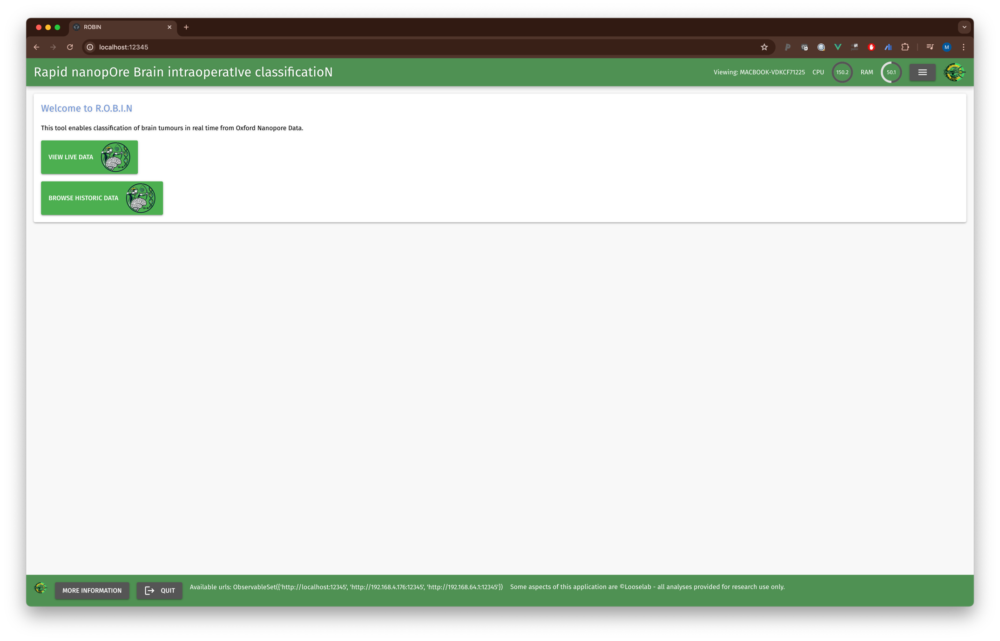

About ROBIN
ROBIN is a powerful real-time bioinformatics interface designed for oncology applications. It provides a comprehensive suite of tools for analyzing genomic data, with a focus on real-time analysis during DNA sequencing runs.
Real-time Analysis
Monitor and analyze sequencing data as it's being generated, providing immediate insights into your samples.
Interactive Visualization
View detailed visualizations of methylation patterns, copy number variations, and gene fusions through an intuitive web interface.
Comprehensive Tools
Includes tools for methylation classification, copy number analysis, coverage tracking, and fusion gene detection.
Key Features
- Methylation classification and analysis
- Copy number variation detection
- Target coverage monitoring
- MGMT promoter methylation status
- Fusion gene detection
- Real-time data visualization
- Interactive genome browser
Interface Preview

The ROBIN interface provides a clean, intuitive way to monitor and analyze your sequencing data in real-time.
Getting Started
ROBIN requires Docker and can be installed using Conda. For detailed installation instructions and documentation, visit our GitHub repository.